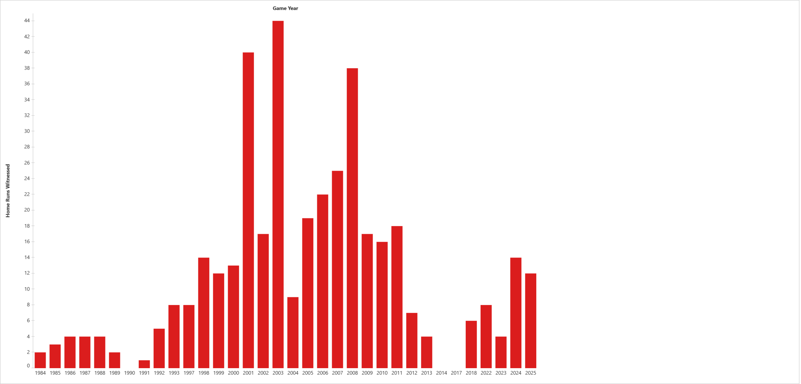

Who am I?
There's a talk Jon Kabat-Zinn gave at Google that I've watched more times than I can count. He tells about a Korean Zen master he studied with, who taught with very little English. He'd ask the room, “Who am I?” Then answer it himself: “Don't know.”
Tableau Agent knew. It said zero.
On Tableau Cloud, “I” was never a question. You were at the keyboard. The filters were the ones you dragged. On Tableau Next, I asked the agent how many home runs I'd seen. It said none, and called that a unique insight. The sentence was fluent and wrong. The query underneath told me why.
The game. Monday, June 15, 1987. Orioles at Yankees, 9–2. Bottom margin of Poppa's card: “Got 2 balls — 1 from Winfield, 1 from Niedenfuer. Georgie's Birt'day shown on scoreboard.” The day before I turned nine, and Yankee Stadium knew exactly who I was. The agent had to be told.

Tableau Next reads the Data 360 model directly, so there was nothing to rebuild. Tableau Agent came on with one Setup toggle.
First question: how many home runs have I witnessed? Zero. “You didn't witness any home runs — a unique insight!” The response carries a troubleshooting field, and in it is the exact query the agent sent. It had a filter I never asked for: attendee_key = <my Salesforce user id>. It decided “I” meant whoever was logged in. On a one-person model, that's always zero. Confidently.
The honest answer was the Zen master's: don't know. The agent guessed instead.
Tableau Next lets you store business preferences on the semantic model: plain English that every question passes through. Here's the part that mattered:
Keeping Score is one person's baseball attendance record: George "Wax"
Weatherwax's 178 attended MLB games, 1984-2025. When the user says I, me,
my, mine, or we, they mean the ENTIRE model. Never filter by attendee,
attendee_key, Game_Attendee, or the current Salesforce user unless the
question names a specific attendee by name.Asked again: 400 home runs, 178 games. Four for four on the golden questions. Written headlessly through the hosted MCP and kept in git, never edited in the org.
Tableau Cloud answered all seven too, through five published sources and a relationship model. Visual, descriptive, yours. Tableau Next is governed metrics and an agent. You don't drag a filter. You tell the model what your words mean.
Where the two disagreed, it was about joins: a cross-table formula Data 360 fanned out to 281, Tableau Cloud refused outright. Same definitions. Different engines. The difference is in which joins each one is willing to walk.
This is Tableau Next as a query and agent surface over a Data 360 model, plus one chart. No dashboards. It lives in a scratch org with a 30-day life, minted September 3, so everything here lives in git or evaporates. That was the forcing function.
If your model holds anybody's personal data, write the business preferences before you turn the agent on. Say who “I” is. Then ask it “how many do I have?” and read the query, not the answer.
Next, batting cleanup: Is the trace the new dashboard QA? →